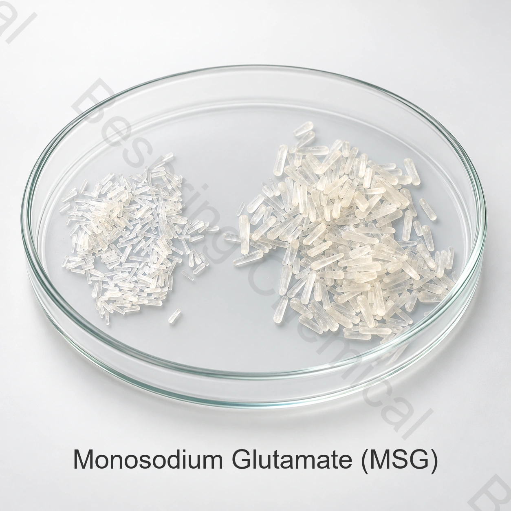

การแสดงตัวและความบริสุทธิ์
คุณสมบัติ INS 621 อัตลักษณ์ โซเดียม กลูทาเมท เนื้อหา การหมุน สูญเสียการแห้ง ความชัดเจน และข้อจํากัดของธาตุ
ส่วนประกอบระดับอาหาร อุมมิโมโตะ เอกซ์เซอร์ ไอโอ 621
โมโนโซเดียมแอล-กลูตาเมตเกรดอาหาร (MSG), INS 621 เป็นเกลือโซเดียมของกรดแอล-กลูตามิก ใช้เพิ่มรสอูมามิในอาหารคาวและระบบเครื่องปรุงรสที่เหมาะสม

Product image esche และ Package เมื่อมีการเรียงลําดับ
แบ่งปันโปรแกรม จํากัดความสําคัญ วิธีการทดสอบ ปริมาณ แพ็คและปลายทาง
ระดับเกรดอาหาร, การกําหนดแหล่ง
แพ็คเกจยืนยันประเภทของกระเป๋า น้ําหนักของnet และขนาดอนุภาค
การโหลดตัวบรรจุยืนยันการแพ็คและปลายทางที่เลือก
หลักฐานตรงกันข้อกําหนดปัจจุบันและCOA จําเป็นต้องใช้
คําตอบผลิตภัณฑ์โดยตรง
โมโนโซเดียมแอล-กลูตาเมตเกรดอาหาร (MSG), INS 621 เป็นเกลือโซเดียมของกรดแอล-กลูตามิก ใช้เพิ่มรสอูมามิในอาหารคาวและระบบเครื่องปรุงรสที่เหมาะสม
สําหรับการจัดเลี้ยง "ระดับอาหาร" ต้องได้รับการสนับสนุนจากข้อกําหนดของแหล่งผลิตและเอกสารคุณภาพที่เหมาะสม และปริมาณของ COA. ครั้งสุดท้ายขึ้นอยู่กับสูตรที่สมบูรณ์, วัตถุประสงค์การทํางานและกฏการค้าปลายทาง
รายการการเกิดขึ้นอีก
ใช้จุดจัดอันดับเหล่านี้เมื่อเปรียบเทียบผู้ผลิตจีน ผู้ผลิต ข้อเสนอจําหน่าย ผลงาน ผลงานจํานวนมาก หรือตัวอย่าง
คุณสมบัติ INS 621 อัตลักษณ์ โซเดียม กลูทาเมท เนื้อหา การหมุน สูญเสียการแห้ง ความชัดเจน และข้อจํากัดของธาตุ
จัดทําเครื่องปรุงรส ระดับเกลือ โปรไฟล์รสชาติเป้าหมาย ขนาดอนุภาค และกระบวนการผสม
เกรดคริสตัลของรัฐ หรือเมช ปริมาณ แพ็คสินค้า จุดหมายปลายทาง และเงื่อนไขการส่งสินค้า
การสลายตัว การจับคู่อนุภาค โซเดียม ส่วนประกอบและประสาทสัมผัส ในฤดูกาลสมบูรณ์
การตรวจสอบโปรแกรม
นี่เป็นพื้นที่แสดงโดยโปรแกรม ไม่ใช่ส่วนรองรับทั่วไป หรือส่วนแนะนําการป้อนยา
ผลกระทบของสึนามิ และช่วยปัดสีของกลิ่นได้ ด้วยส่วนผสมที่แห้ง
ใช้ในสูตรที่เหมาะสม หลังจากทดลองรับประสาทสัมผัส การคํานวณโซเดียมและป้าย
อาจรวมเข้ากับผงที่ปรุงรสได้ ซึ่งขนาดอนุภาคและความกลมกลืน ถูกควบคุม
สามารถประเมินค่าได้ในเนื้อ อาหารทะเล หรือแบบผัก ตามกฏตลาด
ข้อมูลเทคนิคที่ใช้ร่วมกัน
ค่าต่อไปนี้จะทําซ้ําข้อมูลทางเทคนิคที่ให้มาในสิ่งที่แนบมาด้วย 9 ขนาดอนุภาพไม่ได้กําหนดไว้ในแหล่งกําเนิด และจะต้องตกลงในการเรียงลําดับ
ปัดหรือใช้แป้นพิมพ์เพื่ออ่านทุกคอลัมน์
| รายการทดสอบ | การอ้างอิงแบบต่อเนื่อง |
|---|---|
| โซเดียม กลูตาเมท | ≥ 99% |
| ขนาดอนุภาค | ยังไม่ได้ระบุอยู่ในแหล่ง |
| การแปลงข้อมูล | ≥ 98% |
| การหมุนเฉพาะ [alpha] D20 | +24.90 ถึง +25.30 |
| การ สูญ เสีย เมื่อ แห้ง | ≤ 1% |
| pH | 6.7–7.5 |
| เหล็ก | ≤ 5 ppm |
| แปรงทาสี | ≤ 0.05% |
| ภาษาอาร์เซนิคName | ≤ 0.5 ppm |
| ตะกั่ว | ≤ 1 ppm |
| เลขฐานสิบหก | ≤ 5 mg/kg |
บันทึกช่วยจํา: สิ่งที่แนบมาด้วยแสดงถึงขนาดอนุภาคเท่านั้นเป็น "**". กําหนดเมช, ขนาดคริสตัล หรือระดับภาพเป็นความต้องการตามสัญญา หากมันสําคัญในการทําการทํา residenting, default or sing.
การเลือกเชิงเทคนิค
กําหนดค่าของดี, ค่าของคริสตัลที่ปกติหรือหยาบๆ โดยใช้วิธีการดับกลิ่นที่ตกลงไว้
ทําการทดสอบประสาทสัมผัสในสูตรสําเร็จ เอ็มเอสจี ไม่ใช่ตัวทดแทนสูตรที่สมดุล
รวมการบริจาค MSG โซเดียม เมื่อทบทวนสารอาหารและสูตรทดลอง
ตรวจสอบการหมุน, การส่งและความไม่เสมอภาคของ COA ปัจจุบัน
การรองรับการจัดอันดับ
ต้องการกําหนดลายเซ็นในปัจจุบันหรือ TDS, SDS, วิธีการทดสอบ, ตัวแทน COA และชุด COA
การตรวจสอบใช้ความปลอดภัยด้านอาหาร, คุณภาพ, โคเชอร์, ฮาลาล และเว็บไซต์ เอกสารสําหรับเกรดและแหล่งที่มาที่แน่นอน
ทบทวน ดู FAO/JECFA monsodium L-glutam สถิติแล้วใช้กฏการวางขายของที่วางขาย เป็นอาหารที่เสร็จแน่นอน
การจัดเก็บและการจัดการ
คําถามของผู้ซื้อ
INS 621 คือโมโนโซเดียมแอล-กลูตาเมต หรือ MSG ใช้เพิ่มรสอูมามิในอาหารคาวที่อนุญาตให้ใช้ โดย E621 เป็นรหัสยุโรปที่สอดคล้องกัน
ไม่ใช่ MSG เป็นเกลือโซเดียมของกรดกลูตามิก ส่วนเกลือแกงเป็นโซเดียมคลอไรด์ รสและองค์ประกอบต่างกัน งานลดเกลือจึงต้องทดสอบประสาทสัมผัสและคำนวณสูตรทั้งหมด
เลือกขนาดคริสตัลเทียบกับอนุภาคที่เข้าคู่กับการเยื้อง, การจับต้อง, การหักเห และความต้องการที่ปรากฏ บนหน้านี้ ไม่ได้หมายความว่ามีขนาดอนุภาคนั้น ๆ; เห็นด้วยโดยตรงกับแหล่ง
ต้องการกําหนดลายเซ็นในปัจจุบัน, วิธีการวิเคราะห์ และตัวแสดงและชุด COSA. ยืนยันการแสดงตัว, ระบุ, การหมุน, ความชัดเจน และข้อจํากัดความไม่สมดุลที่สัมพันธ์กันสําหรับระดับที่เลือก
ให้ใช้โปรแกรมปรุงอาหารหรืออาหาร, อุปสงค์ผลึก ขนาดมาตรฐาน และข้อจํากัดที่สําคัญ, ปริมาณ, แพ็ค, ปลายทาง, ใบรับรอง และเงื่อนไขการส่งสินค้า
เนื้อหาอัปเดต 2026-09-13.
ส่วนประกอบที่เกี่ยวข้อง
ทบทวนอีกทางเลือกหนึ่งที่อนุรักษ์ และข้อกําหนดการจัดหา
ลอง ทบทวน สภาพ แวด ล้อม ที่ เป็น ฟอสเฟต อีก ชนิด หนึ่ง และ การ พิจารณา อย่าง เปรี้ยว.
เลือกชุดส่วนประกอบเต็มรูปแบบ และเอกสารเทคนิคที่มีอยู่
คําแนะนําของโปรแกรมที่เกี่ยวข้อง: อาหาร, ซอส, และ อาหาร บรรจุ.
การจัดหาที่อิงข้อกำหนด
แบ่งปันใบสมัคร, เกรดเป้าหมาย และปริมาณ, แพ็ค, จุดหมาย และเอกสารที่ต้องใช้ สําหรับข้อเสนอที่ต้องใช้จํานวนมาก
บอกเราถึงตลาดเกรดและปลายทางของคุณ เราจะได้ยืนยันได้ว่าเอกสารไหน ที่สั่งได้
การอ้างอิงภายนอกไม่ใช่ใบรับรองชุดหรือค่าผลิตภัณฑ์ของเบสปริง